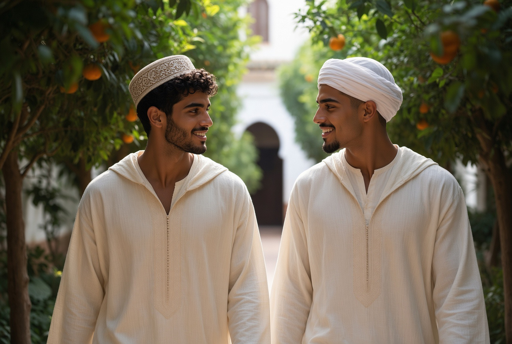
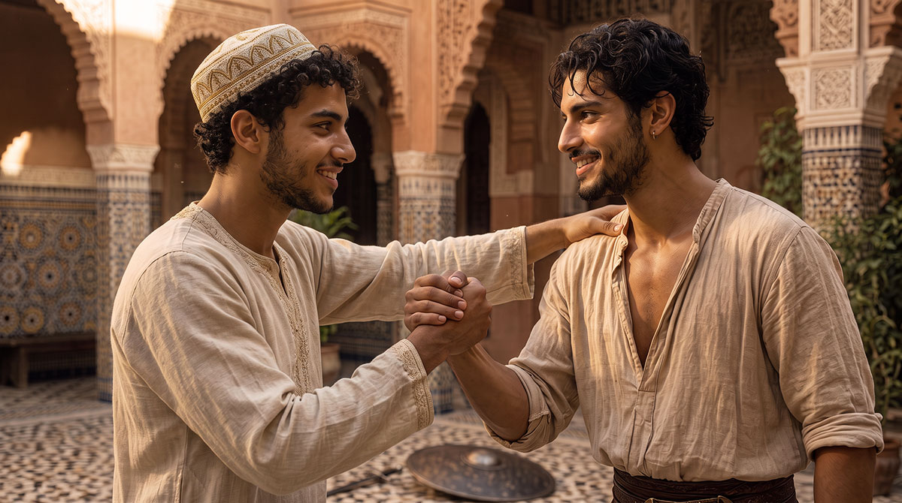
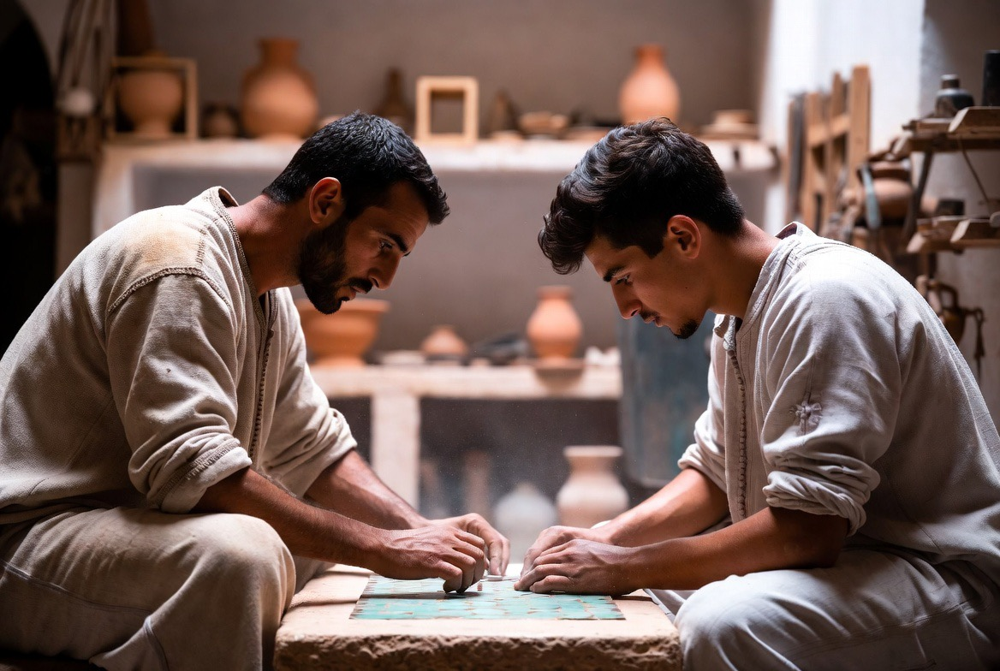
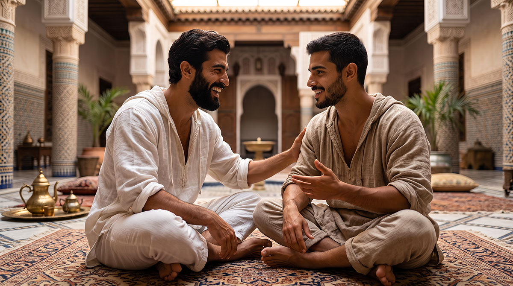
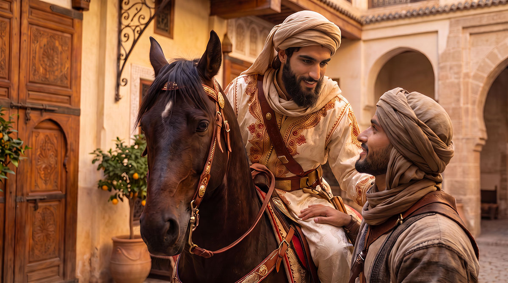
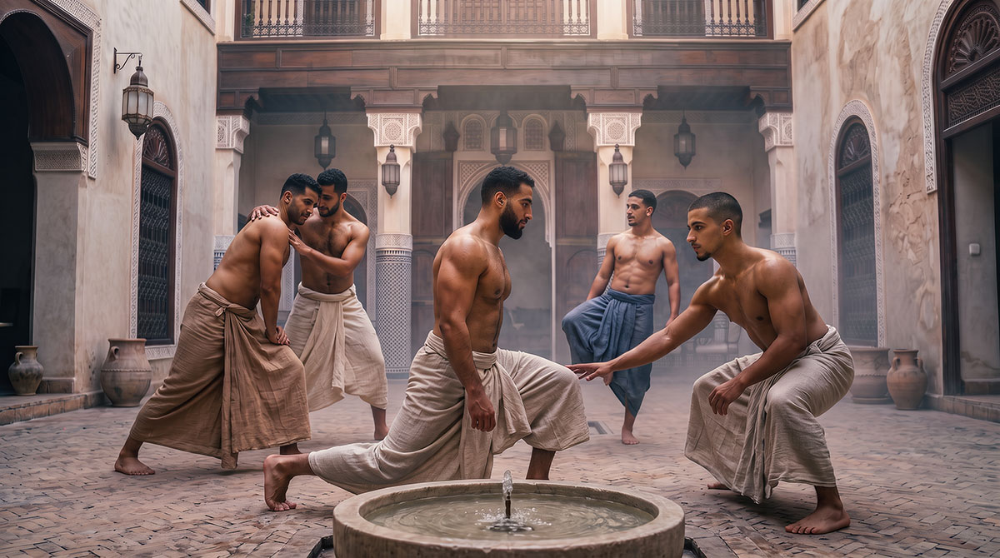
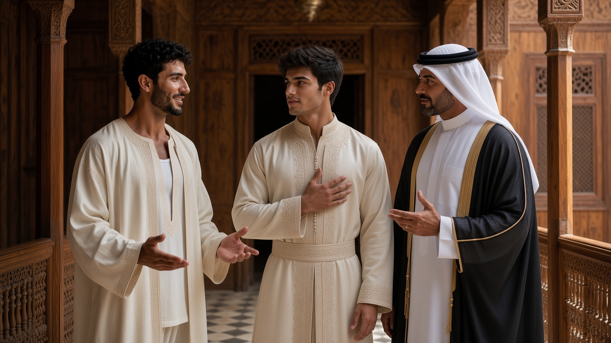

Fraternité & droiture
Amitié, honneur, loyauté, chevalerie, discipline — ce que la futuwwa transmet à travers le geste et la compagnie.

La futuwwa — déjà présentée dans les fondements de Dar al-Hiraf — n'est pas seulement un idéal de compagnonnage professionnel. C'est une manière d'être homme parmi d'autres hommes : lié par l'honneur autant que par le geste, par la parole donnée autant que par le métier appris. Cinq exigences la composent, et chacune se retrouve, intacte, dans la poésie et la sagesse arabes les plus anciennes.
LA COMPAGNIE
L'amitié entre hommes

Dans le monde arabo-islamique traditionnel, l'amitié virile n'est pas un lien de circonstance : c'est une alliance qui se construit et se prouve, souvent à travers l'épreuve partagée — le voyage, le métier, l'atelier.
كَم صَديقٍ عَرَفتُهُ بِصَديقٍ
صارَ أَحظى مِنَ الصَديقِ العَتيقِ
وَرَفيقٍ رافَقتُهُ في طَريقٍ
صارَ بَعدَ الطَريقِ خَيرَ رَفيقِ
« Combien d'amis j'ai connus par un ami, devenus plus chers qu'un ami de toujours ; combien de compagnons accompagnés sur un chemin, devenus, le chemin fini, le meilleur des compagnons. »
al-Buḥturī, IXe siècle
Ce que dit le poète est exactement ce que vit un apprenti à Dar al-Hiraf : l'amitié la plus solide ne précède pas l'épreuve commune, elle en naît. Deux hommes qui partagent l'atelier, la table et la prière deviennent frères non par déclaration, mais par le temps passé côte à côte.
LE NOM QU'ON PORTE
L'honneur (sharaf, ʿird)

L'honneur, dans la tradition arabe, n'est pas une fierté abstraite : c'est ce qu'un homme doit à son nom, à sa parole, à ceux qui portent le même nom que lui. Le perdre n'est pas une gêne passagère — c'est une blessure que rien ne répare aussi vite qu'elle a été faite.
C'est cet honneur que chante ʿAntarah ibn Shaddād dans sa Muʿallaqa — déjà cité dans Furūsiyya : le courage au combat n'a de sens que parce qu'il défend un nom, une parole, une communauté. À Dar al-Hiraf, cet honneur se transmet à plus petite échelle mais avec la même exigence : tenir ce qu'on a promis, ne pas trahir la confiance d'un maître, ne pas déshonorer le geste qu'on nous a enseigné.
LA PAROLE TENUE
La loyauté (wafāʾ)

Le wafāʾ — la fidélité à la parole donnée, à l'engagement pris, à l'ami dans l'épreuve — occupe une place centrale dans l'éthique arabe classique, au point que trahir un pacte reste, aujourd'hui encore dans l'imaginaire populaire, l'une des pires fautes qu'un homme puisse commettre.
Ce n'est pas un hasard si la futuwwa lie l'apprenti à son maître par une promesse, non par un contrat : le wafāʾ suppose qu'on reste fidèle même quand personne ne vérifie, même quand cela coûte. C'est cette même loyauté que Dar al-Hiraf cherche à former — envers le maître, envers les frères d'atelier, envers la parole donnée à une future famille.
LE CORPS AU SERVICE DE L'HONNEUR
La chevalerie (furūsiyya)

La force sans mesure n'est pas la chevalerie : c'est sa négation. La furūsiyya arabo-islamique — développée en détail dans sa propre page — enseigne que le corps entraîné doit rester au service du courage et de la retenue, jamais de la brutalité seule.
LA FORME QUI TIENT DANS LE TEMPS
La discipline

Rien de ce qui précède — amitié, honneur, loyauté, chevalerie — ne se maintient sans discipline : la répétition patiente du geste, le renoncement à la facilité, l'acceptation d'un rythme qu'on n'a pas choisi soi-même. C'est le fil qui relie toutes les disciplines de Discipline choréutique et de Furūsiyya à la vie quotidienne de la maison.
« Ce qui n'est pas transmis se perd ; ce qui se perd doit être reconquis, avec plus de peine que ce qu'il en aurait coûté de le garder. »
POURQUOI CELA COMPTE AUJOURD'HUI
Une formation, pas une nostalgie

Ce que Dar al-Hiraf transmet n'est pas un décor culturel : c'est une colonne vertébrale.
Beaucoup de jeunes hommes grandissent aujourd'hui sans avoir jamais reçu, de manière cohérente, ce que l'amitié, l'honneur, la loyauté et la discipline exigent concrètement d'eux. Le monde qui les entoure change de repères plus vite qu'il ne peut en transmettre — les métiers se perdent faute de mains pour les recevoir, comme le rappelle déjà notre Vision & mission.
Dar al-Hiraf ne prétend pas offrir un refuge contre le monde. Elle offre autre chose : un lieu où un jeune homme apprend, par le geste répété et la compagnie des maîtres et des frères, ce que veut dire tenir une parole, porter un honneur, rester fidèle dans la durée. Ce socle ne s'oppose à rien — il précède tout le reste. Un homme qui sait ce qu'il porte peut ensuite affronter n'importe quel monde sans s'y dissoudre.
C'est ce que les parents qui nous confient un fils viennent chercher : non une idéologie, mais des fondations. Un homme formé ici ne revient pas armé contre quiconque — il revient capable de tenir, de transmettre, et de fonder à son tour ce que d'autres avant lui ont tenu.
ENTRER DANS LA FUTUWWA
Cette formation se transmet au fil d'un séjour, d'un stage ou d'une résidence à Dar al-Hiraf — jamais en discours seul.
Nous écrire →